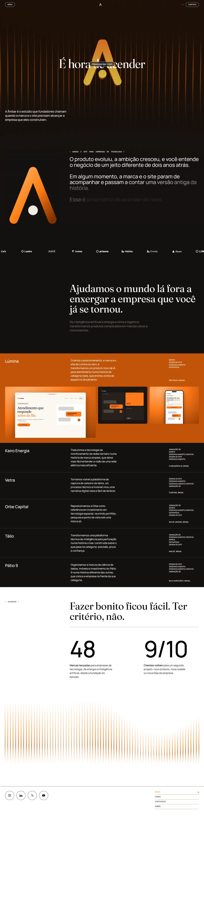
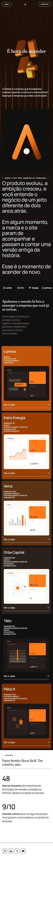

Você paga anúncio e o contato não chega
O tráfego cai numa página genérica ou no Instagram, e a maioria sai sem falar com ninguém.
(01) Serviço · Landing pages e sites
Landing pages feitas para uma ação só: o cliente chamar você no WhatsApp. Depois testamos a oferta, o layout e o texto, e ficamos com o que traz mais contato.
(Para quem)
O tráfego cai numa página genérica ou no Instagram, e a maioria sai sem falar com ninguém.
Site antigo, lento no celular, que não mostra por que escolher você.
As mudanças são feitas no achismo e ninguém mede de onde vem o cliente.
(O que está incluso)
Estratégia, design e código no mesmo time. Nada se perde entre agência, freelancer e programador.
O que você promete, para quem, e a ordem de provas que faz o cliente acreditar.
Títulos, seções e botões escritos para a ação que você quer.
Celular e desktop, com o botão de contato sempre à mão.
Carrega rápido, aparece no Google e sai com formulário e WhatsApp ligados.
Cada botão e formulário medido. Você vê de onde vem cada contato.
Lead entra no CRM, recebe resposta e a equipe é avisada. Sem copiar nada à mão.
(Como funciona)
Você aprova cada etapa no seu tempo. Mandamos o andamento por escrito, sem reunião desnecessária.
Etapa 1
Seu negócio, seu cliente e onde você perde contato hoje.
Etapa 2
Celular e desktop, para você aprovar.
Etapa 3
Página no ar, medida e integrada.
Todo mês
Plano opcional.
(Projetos)


Agência digital · Landing page


Estúdio de marca · Site
(Perguntas frequentes)
(Próximo passo)
Conte o seu negócio, o seu público e o seu objetivo. Você sai da conversa sabendo o que construir, em que ordem e por quê.
Floway · Landing pages, sites e automações